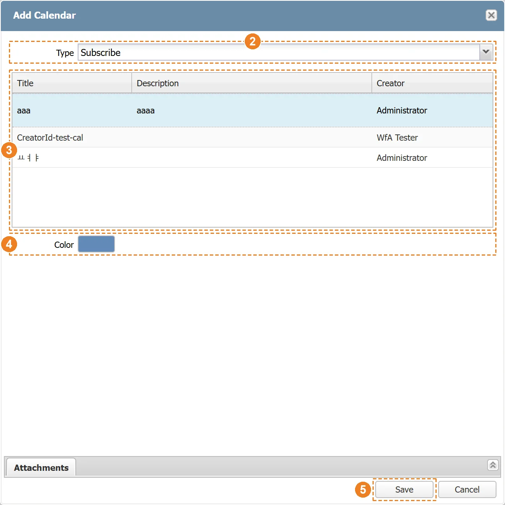
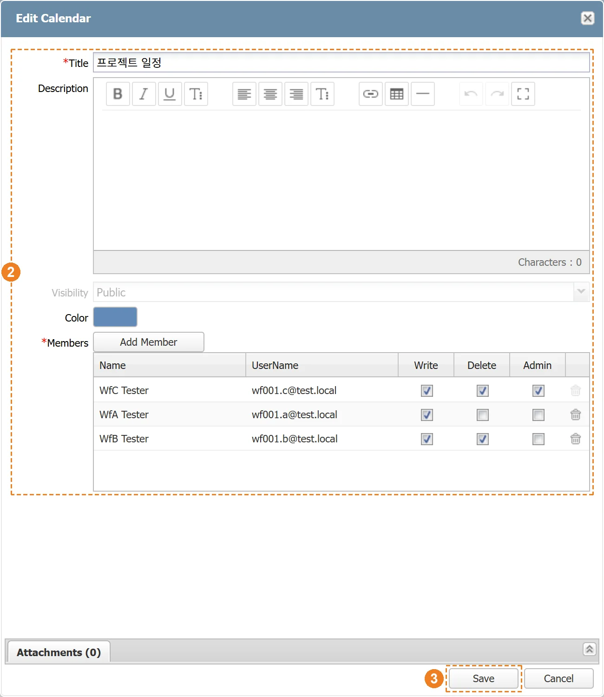
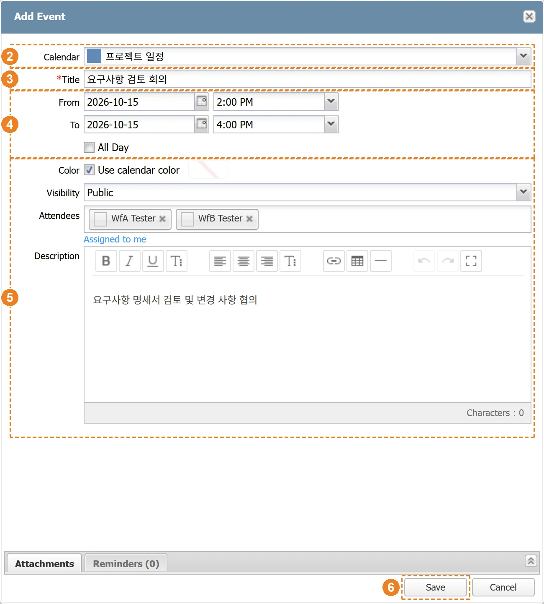
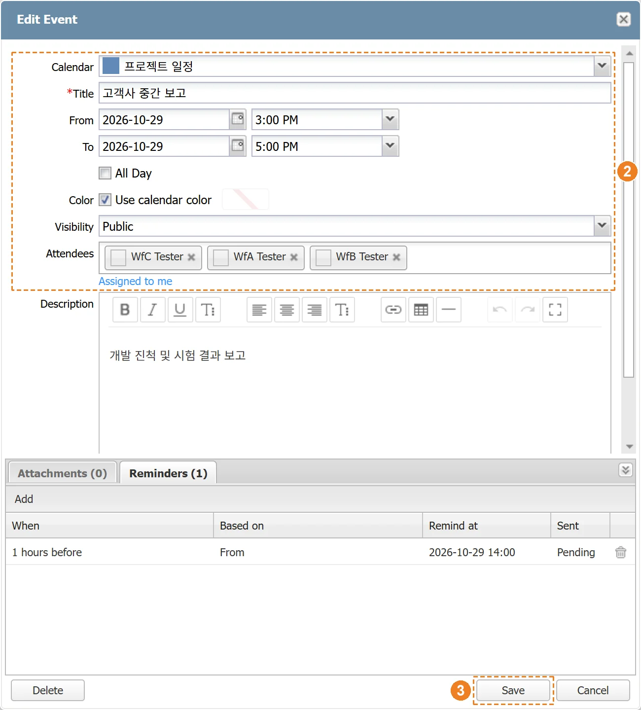
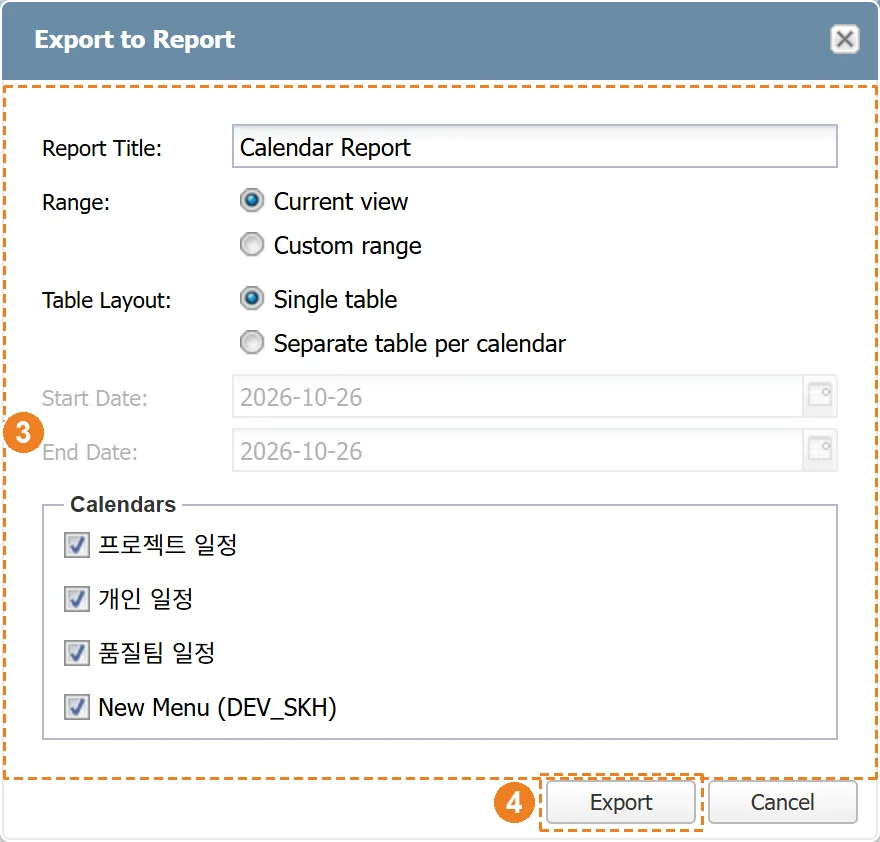

|
SILKROAD Calendar는 사용자의 업무 일정을 캘린더 단위로 등록하고 관리하는 기능을 제공한다. 사용자는 캘린더를 새로 만들어 다른 사용자와 공유하거나, 다른 사용자가 공개한 캘린더를 구독할 수 있다. 또한 프로젝트의 Task 메뉴를 캘린더로 연결해 WBS 기반의 작업 일정을 캘린더에서 함께 확인할 수 있다. 일정에는 참석자, 첨부파일, 알림(Reminder)을 등록할 수 있으며, 알림은 설정한 시각에 참석자에게 메신저로 발송된다. 작성된 캘린더 화면은 이미지 파일 또는 보고서 문서로 내보낼 수 있다.
SILKROAD 메인 화면 상단 검색창 우측의 캘린더 버튼을 클릭하면 Calendar 창이 열린다. Calendar 화면은 월(Month) 단위로 일정을 표시한다.
|
구분 | 명칭 | 설명 |
| 기능 버튼 | 캘린더 추가(Add Calendar), 일정 추가(Add Event), 내 알림 목록(My Reminders), 캘린더 내보내기(Export Calendar) |
| Calendar List | 생성·구독한 캘린더 목록. 클릭으로 일정 표시 여부 전환, 우클릭으로 캘린더 메뉴 실행, 톱니 버튼으로 순서 변경 |
날짜 이동 | Today(오늘로 이동), 이전/다음 달 이동, 월 선택(Select Month) | |
| Calendar View | 표시 중인 캘린더의 일정을 캘린더 색상으로 표시. 일정을 클릭하면 일정 편집 창(Edit Event) 실행 |
| 새 창 열기(+) | Calendar 화면을 새 브라우저 탭에서 단독으로 실행 |
캘린더는 일정을 묶어 관리하는 단위이다. 캘린더는 추가 방식(Type)에 따라 사용자가 새로 만드는 캘린더(Create), 다른 사용자가 공개한 캘린더를 구독하는 캘린더(Subscribe), 프로젝트 Task 메뉴를 연결한 캘린더(Project)로 구분된다.
새 캘린더를 생성한다. 캘린더 제목(Title)은 필수 입력 항목이며, 공개 범위(Visibility)에 따라 캘린더를 함께 사용할 멤버와 권한을 지정할 수 있다. 생성한 캘린더는 Calendar List에 즉시 표시된다.
① ‘Add Calendar’ 버튼을 클릭한다.
② ‘Add Calendar’ 창에서 Type – ‘Create’를 선택한다.
③ Title 항목에 캘린더 제목을 입력하고, 필요한 경우 Description을 입력한다.
④ Visibility 항목에서 공개 범위를 선택한다.
⑤ Color 항목에서 캘린더 색상을 선택한다.
⑥ Visibility가 Public 또는 Private인 경우 ‘Add Member’ 버튼을 클릭해 멤버를 추가하고 멤버별 권한을 체크한다.
⑦ ‘Save’ 버튼을 클릭한다.
- Public : 지정한 멤버와 함께 사용하며, 다른 사용자가 구독(Subscribe)할 수 있다.
- Private : 지정한 멤버만 사용할 수 있으며, 구독 목록에 표시되지 않는다.
- OnlyMe : 캘린더를 생성한 사용자 본인만 사용한다.
|
Title을 입력하지 않고 Save 버튼을 클릭하면 Title 항목이 빨간색 테두리로 표시되고 캘린더가 생성되지 않는다. 멤버는 기본적으로 일정을 조회(Read)할 수 있다. Write는 일정 등록·수정, Delete는 일정 삭제 권한이며, Admin을 체크하면 Write와 Delete가 함께 체크된다. 캘린더 생성자의 권한은 변경하거나 멤버 목록에서 삭제할 수 없다. |
다른 사용자가 공개 범위 Public으로 생성한 캘린더를 구독해 내 Calendar List에 추가한다. 구독 목록에는 아직 구독하지 않은 캘린더만 표시된다.
① ‘Add Calendar’ 버튼을 클릭한다.
② Type – ‘Subscribe’를 선택한다.
③ 캘린더 목록(Title, Description, Creator)에서 구독할 캘린더를 선택한다.
④ Color 항목에서 내 화면에 표시할 캘린더 색상을 선택한다.
⑤ ‘Save’ 버튼을 클릭한다.
 |
프로젝트의 Task 메뉴를 캘린더로 연결해 Task 아이템의 일정을 Calendar View에 표시한다. 이미 연결된 Task 메뉴는 목록에 표시되지 않는다. 연결 후에는 캘린더에 표시할 Task 아이템을 선택한다.
① ‘Add Calendar’ 버튼을 클릭한다.
② Type – ‘Project’를 선택한다.
③ Project, Task Menu 목록에서 연결할 Task 메뉴를 선택한다.
④ Color 항목에서 캘린더 색상을 선택한다.
⑤ ‘Save’ 버튼을 클릭한다.
① Calendar List에서 Task 캘린더를 우클릭해 ‘Select Calendar Items’를 클릭한다.
② ‘Select Calendar Items’ 창의 Task 목록에서 캘린더에 표시할 아이템의 Show 체크박스를 체크한다.
- 검색창(Search task...)에 Task 이름을 입력해 아이템을 찾을 수 있다.
③ ‘OK’ 버튼을 클릭한다.
|
Task 캘린더의 일정은 Task 아이템의 일정을 표시하므로 Calendar에서 내용을 수정하거나 삭제할 수 없다. 일정 편집 창의 ‘Go to Task’ 버튼을 클릭하면 해당 Task 아이템 화면이 새 창으로 열린다. Task 캘린더의 일정에도 알림(Reminder)은 등록할 수 있다. |
사용자가 생성한 캘린더의 제목, 설명, 색상, 멤버 및 권한을 수정한다. 수정한 내용은 Calendar List에 즉시 반영된다.
① Calendar List에서 수정할 캘린더를 우클릭해 ‘Edit Calendar’를 클릭한다.
② ‘Edit Calendar’ 창에서 Title 등 수정할 항목의 내용을 변경한다.
③ ‘Save’ 버튼을 클릭한다.
 |
Edit Calendar 메뉴는 사용자가 직접 생성한 캘린더에서만 표시된다. 캘린더의 공개 범위(Visibility)는 생성 후 변경할 수 없다. Title을 모두 지우고 Save 버튼을 클릭하면 Title 항목이 빨간색 테두리로 표시되고 수정 내용이 저장되지 않는다. |
사용자가 생성한 캘린더를 삭제한다. 캘린더를 삭제하면 캘린더에 등록된 모든 일정이 함께 삭제된다.
① Calendar List에서 삭제할 캘린더를 우클릭해 ‘Delete Calendar’를 클릭한다.
② ‘All events in this calendar will also be deleted. Do you want to delete this calendar?’ 안내 팝업에서 ‘Yes’를 클릭한다.
안내 팝업에서 ‘No’를 클릭하면 캘린더가 삭제되지 않고 Calendar List에 그대로 유지된다. |
구독한 캘린더와 Task 캘린더는 Calendar List의 우클릭 메뉴에서 정보를 조회하거나 표시 색상을 변경하고, 구독을 해제할 수 있다.
구독한 캘린더의 제목(Title), 생성자(Creator), 공개 범위(Visibility), 색상(Color), 설명(Description), 첨부파일(Attachments)을 조회한다.
① Calendar List에서 구독한 캘린더를 우클릭해 ‘Calendar Info’를 클릭한다.
② ‘Calendar Info’ 창에서 캘린더 정보를 확인하고 ‘Close’ 버튼을 클릭한다.
내 화면에 표시되는 캘린더 색상을 변경한다. 변경한 색상은 본인 화면에만 적용된다.
① Calendar List에서 캘린더를 우클릭해 ‘Edit Subscribed Info’를 클릭한다.
② Color 항목에서 색상을 선택하고 ‘OK’ 버튼을 클릭한다.
① Calendar List에서 구독을 해제할 캘린더를 우클릭해 ‘Unsubscribe Calendar’를 클릭한다.
② ‘Do you want to unsubscribe from this calendar?’ 안내 팝업에서 ‘Yes’를 클릭한다.
Calendar List에 표시되는 캘린더의 순서를 변경한다.
① Calendar List 상단의 톱니(Reorder Calendars) 버튼을 클릭한다.
② ‘Reorder Calendars’ 창에서 캘린더를 드래그해 순서를 변경한다.
③ ‘Save’ 버튼을 클릭한다.
Calendar List에서 캘린더를 클릭해 해당 캘린더의 일정을 Calendar View에 표시하거나 숨긴다. 여러 캘린더를 함께 사용할 때 필요한 캘린더의 일정만 골라 볼 수 있다.
① Calendar List에서 표시할 캘린더를 클릭해 활성화한다.
- 활성화된 캘린더의 일정이 Calendar View에 표시된다.
② 일정을 숨길 캘린더를 다시 클릭해 비활성화(회색)한다.
- 비활성화된 캘린더의 일정은 Calendar View에서 제거된다.
캘린더에 새 일정을 등록한다. 일정을 등록할 캘린더(Calendar)와 제목(Title), 시작·종료 일시(From, To)를 입력한다. 등록한 일정은 Calendar View에 즉시 표시된다.
① ‘Add Event’ 버튼을 클릭한다.
② ‘Add Event’ 창의 Calendar 항목에서 일정을 등록할 캘린더를 선택한다.
③ Title 항목에 일정명을 입력한다.
④ From, To 항목에 시작 일시와 종료 일시를 입력한다. 하루 종일 일정은 All Day를 체크한다.
⑤ 필요한 경우 Color, Visibility, Attendees, Description을 입력한다.
⑥ ‘Save’ 버튼을 클릭한다.
- Color : ‘Use calendar color’를 체크하면 캘린더 색상을 따르고, 해제하면 일정별 색상을 지정할 수 있다.
- Visibility : Public(모든 내용 공개), TitleOnly(다른 사용자에게 제목만 표시), Private(다른 사용자에게 제목과 내용 비공개)
- Attendees : 일정 참석자. 일정 알림(Reminder)은 참석자에게 발송된다.
- Attachments 탭 : ‘Browse’ 버튼으로 첨부파일을 추가하고 ‘Remove’ 버튼으로 삭제한다. (최대 10개)
- Reminders 탭 : 일정 알림을 등록한다. (1.4.1 참조)
 |
시작 일시(From)가 종료 일시(To)보다 늦거나 같으면 안내 메시지가 표시되고 일정이 저장되지 않는다. Title을 입력하지 않으면 Title 항목이 빨간색 테두리로 표시되고 일정이 저장되지 않는다. |
일정 저장 시 지정한 참석자에게 같은 시간대의 다른 일정이 있으면 ‘Schedule Conflict’ 창을 표시한다. 창에는 ‘One or more attendees already have a conflicting event during this period. Do you still want to save?’ 메시지와 겹치는 일정 목록이 표시된다.
① ‘Schedule Conflict’ 창에서 겹치는 일정(Conflicting Event) 목록을 확인한다.
② 일정을 그대로 등록하려면 ‘Save’를, 일정을 조정하려면 ‘Cancel’을 클릭한다.
|
등록된 일정의 내용을 수정한다. 수정한 내용은 Calendar View에 즉시 반영된다.
① Calendar View에서 수정할 일정을 클릭한다.
② ‘Edit Event’ 창에서 수정할 항목의 내용을 변경한다.
③ ‘Save’ 버튼을 클릭한다.
 |
일정 수정은 캘린더의 Write 권한이 있는 사용자만 할 수 있다. 권한이 없으면 Edit Event 창이 읽기 전용으로 표시된다. 다른 사용자가 TitleOnly 또는 Private으로 등록한 일정은 공개 범위에 따라 설명 또는 제목이 표시되지 않는다. Title을 모두 지우고 Save 버튼을 클릭하면 Title 항목이 빨간색 테두리로 표시되고 수정 내용이 저장되지 않는다. |
등록된 일정을 삭제한다. 일정 삭제는 캘린더의 Delete 권한이 있는 사용자만 할 수 있다.
① Calendar View에서 삭제할 일정을 클릭한다.
② ‘Edit Event’ 창에서 ‘Delete’ 버튼을 클릭한다.
③ 삭제 안내 팝업에서 ‘Yes’를 클릭한다.
삭제 안내 팝업에서 ‘No’를 클릭하면 일정이 삭제되지 않고 Calendar View에 그대로 유지된다. |
일정 알림은 일정의 시작 또는 종료 시각을 기준으로 지정한 시간 전·후에 일정 참석자에게 메신저로 알림을 발송하는 기능이다. 알림 시각은 다음 세 가지 항목으로 지정한다.
- When : 알림 시간 값과 단위(minutes, hours, days, weeks)
- Before / After : 기준 시각의 이전 또는 이후
- Based on : 기준 시각. From(일정 시작) 또는 To(일정 종료)
예를 들어 When ‘10 minutes’, ‘Before’, Based on ‘From’으로 설정하면 일정 시작 10분 전에 알림이 발송된다. 하루 종일(All Day) 일정은 해당 날짜의 시스템 설정 시각(기본 오전 9시)을 기준으로 알림 시각을 계산한다.
① Calendar View에서 알림을 설정할 일정을 클릭해 ‘Edit Event’ 창을 연다.
② ‘Reminders’ 탭의 ‘Add’ 버튼을 클릭한다.
③ ‘Add Reminder’ 창의 When 항목에 알림 시간 값을 입력하고 단위를 선택한다.
④ ‘Before’ 또는 ‘After’ 버튼으로 알림 기준을 선택한다.
⑤ Based on 항목에서 기준 시각(From/To)을 선택한다.
⑥ ‘OK’ 버튼을 클릭한다.
⑦ Reminders 목록에 추가된 알림을 확인하고 ‘Save’ 버튼을 클릭해 일정을 저장한다.
- 저장 후 Reminders 목록에 알림 시각(Remind at)과 발송 상태(Sent)가 표시된다.
|
When 항목을 비워 두고 OK 버튼을 클릭하면 When 항목이 빨간색 테두리로 표시되고 알림이 등록되지 않는다. 알림은 참석자(Attendees)에게만 발송된다. 참석자가 없는 일정에 알림을 설정하면 알림이 등록되지 않는다는 안내 메시지가 표시된다. 알림 시각이 이미 지난 알림은 등록되지 않으며, 저장 시 안내 메시지가 표시된다. |
캘린더별 기본 알림을 설정한다. 기본 알림이 설정된 캘린더에 새 일정을 등록하면 Reminders 탭에 기본 알림이 자동으로 추가된다.
① Calendar List에서 캘린더를 우클릭해 ‘Set Default Reminder’를 클릭한다.
② ‘Setting Default Reminder’ 창의 When 항목에 알림 시간 값을 입력하고 단위를 선택한다.
③ ‘Before’ 또는 ‘After’ 버튼으로 알림 기준을 선택한다.
④ Based on 항목에서 기준 시각(From/To)을 선택한다.
⑤ ‘OK’ 버튼을 클릭한다.
|
설정된 기본 알림을 해제하려면 ‘Setting Default Reminder’ 창에서 ‘Reset’ 버튼을 클릭한다. Set Default Reminder 메뉴는 사용자가 직접 생성한 캘린더에서만 표시된다. |
알림 시각이 되면 SILKROAD가 일정 참석자에게 메신저(Messenger)로 알림 메시지를 발송한다. 알림 메시지에는 일정명과 일정 시작(starts at) 또는 종료(ends at) 일시가 표시된다. 알림 시각이 되지 않았거나 이미 발송된 알림은 발송되지 않는다.
- 예) [Reminder] 주간 회의 — starts at 2026-06-10 14:00
사용자에게 등록된 알림 목록을 조회한다. 목록에는 일정명(Event), 캘린더(Calendar), 알림 조건(When), 알림 시각(Reminder Time), 발송 여부(Sent)가 표시된다.
① ‘My Reminders’ 버튼을 클릭한다.
② 조건을 지정해 조회하려면 ‘Filter’ 버튼을 클릭해 필터 영역을 열고 Event, Calendar, Reminder Date를 입력한다.
③ 발송된 알림까지 보려면 ‘Show sent’를 체크하고 ‘Search’ 버튼을 클릭한다.
④ 목록의 알림을 더블클릭하면 해당 일정의 정보 창(Event Info)이 열린다.
|
Calendar 화면을 이미지 파일 또는 보고서 문서 파일로 저장한다.
현재 Calendar View 화면을 이미지 파일(PNG)로 저장한다. 파일명은 ‘Calendar_날짜_시각.png’ 형식으로 생성된다.
① ‘Export Calendar’ 버튼을 클릭한다.
② 드롭다운 메뉴에서 ‘Export to Image’를 선택한다.
③ 생성된 이미지 파일이 사용자 PC에 다운로드된다.
캘린더 일정 목록을 Word 문서 파일(.doc)로 저장한다. 보고서에는 기간 내 일정 요약(전체, 종일, 시간 지정, 캘린더별 건수)과 시작일 순으로 정렬한 일정 목록이 표시된다. 다른 사용자의 비공개 일정은 공개 범위에 따라 제목 또는 설명이 표시되지 않는다.
① ‘Export Calendar’ 버튼을 클릭한다.
② 드롭다운 메뉴에서 ‘Export to Report’를 선택한다.
③ ‘Export to Report’ 창에서 보고서 옵션을 설정한다.
④ ‘Export’ 버튼을 클릭한다.
- Report Title : 보고서 제목 (기본값 ‘Calendar Report’)
- Range : Current view(현재 화면의 기간) 또는 Custom range(Start Date ~ End Date 직접 지정)
- Table Layout : Single table(하나의 표) 또는 Separate table per calendar(캘린더별 표)
- Calendars : 보고서에 포함할 캘린더 선택
 |
Calendar View에 표시된 일정이 없거나, 선택한 기간·캘린더에 일정이 없으면 오류 메시지가 표시되고 파일이 생성되지 않는다. Custom range의 종료일(End Date)은 시작일(Start Date)과 같거나 이후여야 하며, 캘린더를 하나 이상 선택해야 한다. |
번호 | 메시지 | 설명 | 해결방안 |
|---|---|---|---|
1 | Please select a calendar to subscribe to. | Add Calendar 창의 Type이 ‘Subscribe’일 때 캘린더를 선택하지 않고 저장한 경우 | 목록에서 구독할 캘린더를 선택한 후 저장 |
2 | You are already subscribed to this calendar. | 이미 구독 중인 캘린더를 다시 구독하려는 경우 | Calendar List에서 구독 중인 캘린더 확인 |
3 | Please select a project calendar to add. | Add Calendar 창의 Type이 ‘Project’일 때 프로젝트 Task 메뉴를 선택하지 않고 저장한 경우 | 연결할 프로젝트 Task 메뉴를 선택한 후 저장 |
4 | You are already subscribed to this project calendar. | 이미 캘린더로 연결된 프로젝트 Task 메뉴를 다시 추가하려는 경우 | Calendar List에서 연결된 프로젝트 캘린더 확인 |
5 | Please select members to add. | 멤버 추가 창에서 사용자를 선택하지 않고 추가한 경우 | 추가할 사용자를 선택한 후 다시 시도 |
6 | The start date/time (From) cannot be later than the end date/time (To). | 일정의 시작 일시(From)가 종료 일시(To)보다 늦은 경우 | From/To 일시를 확인한 후 다시 저장 |
7 | The start date/time (From) and the end date/time (To) cannot be the same. | 종일(All Day)이 아닌 일정의 시작 일시와 종료 일시가 같은 경우 | 종료 일시를 시작 일시 이후로 변경 하루 종일 일정이면 All Day 체크 |
8 | Max 10 files allowed. | 첨부파일을 10개를 넘게 추가한 경우 (10개까지만 추가됨) | 첨부파일을 10개 이하로 정리 |
9 | Failed to upload attachments. | 캘린더 또는 일정 저장 중 첨부파일 업로드에 실패한 경우 | 첨부파일 확인 후 다시 시도 관리자에게 문의 |
10 | There are no events to export in the current view. | 화면에 표시된 일정이 없는 상태에서 이미지로 내보내기를 실행한 경우 | Calendar List에서 캘린더를 표시하거나 일정이 있는 월로 이동한 후 다시 시도 |
11 | Failed to export calendar image. | 캘린더 화면을 이미지로 만드는 중 오류가 발생한 경우 | 다시 시도 관리자에게 문의 |
12 | Please select both start and end dates. | Export to Report 창에서 기간의 시작일 또는 종료일을 입력하지 않은 경우 | 시작일과 종료일을 모두 입력 |
13 | End date must be on or after the start date. | Export to Report 창에서 종료일이 시작일보다 이전인 경우 | 종료일을 시작일과 같거나 이후로 변경 |
14 | Please select at least one calendar. | Export to Report 창에서 보고서에 포함할 캘린더를 선택하지 않은 경우 | 캘린더를 1개 이상 선택 |
15 | There are no events to export for the selected range and calendars. | 선택한 기간과 캘린더에 해당하는 일정이 없는 경우 | 기간 또는 캘린더를 변경한 후 다시 시도 |
16 | An error occurred while communicating with the server. | 캘린더 저장, 구독, 프로젝트 캘린더 연결 중 서버와 통신이 실패한 경우 | 네트워크 연결 확인 후 다시 시도 관리자에게 문의 |